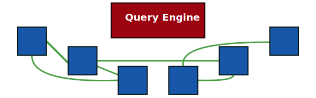

SPARQL processing over centralized data

-
Dataset is collocated with query engine
All data is known beforehand
-
Single dataset
Combining multiple datasets is hard
How to query over decentralized data?

-
Data and query engine are not collocated
Query engine runs on a separate machine
-
Not just one datasets
Data is spread over the Web into multiple documents
Exploit interlinking of documents

-
Linked Data documents are linked to each other
Following the Linked Data principles
-
Query engine can follow links
Start from one document, and discover new documents on the fly
Link Traversal-based Query Processing
= Querying by following links between documents